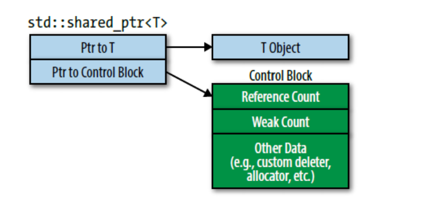
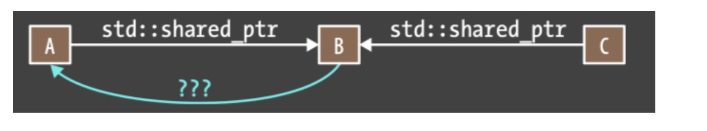

small points
使用智能指针需要包含头文件include <memory>
item18 独占资源使用std::unique_ptr
- 拷贝操作不被
std::unique_ptr允许, 默认情况下std::unique_ptr等同于原始指针, 且对于大多数操作执行的指令完全相同。 - 离开作用域后, 自动释放
unique_ptr包装对象的资源。
// 创建一个unique_ptr实例
unique_ptr<int> pInt(new int(5));
// 无法进行拷贝构造和赋值
unique_ptr<int> pInt2(pInt); // 报错
unique_ptr<int> pInt3 = pInt; // 报错
/// 可以移动构造
unique_ptr<int> pInt2 = std::move(pInt); // 转移所有权
/// 容器中保存指针
unique_ptr<int> p(new int(5));
vec.push_back(std::move(p)); // 使用移动语义
/// 释放资源
std::unique_ptr<T,D> up(t,d); /// D为删除器类型
up = nullptr;//置为空，释放up指向的对象
up.release();//放弃控制权，返回裸指针，并将up置为空
up.reset();//释放up指向的对象std::unique_ptr常见用法是继承结构的工厂函数
如下继承结构
class Investment {...};
class Sock : public Investment { ... };
class Bond : public Investment { ... };
class RealEstate : public Investment { ... };工厂返回的对象完美符合std::unique_ptr的规则, 因为调用者对对象资源负责且对象不可复制, 只能从工厂返回。
template <typename... Ts>
std::unique_ptr<Investment> makeInvestment(Ts&&.. params); // 若干通用引用参数列表 params
/// 获得std::unique_ptr包装的对象
auto pInvestment = makeInvestment(arguments);- 工厂函数下
std::unique_ptr的逻辑
auto delInvmt = [](Investment* pInvestment) {
makeLogEntry(pInvestment);
delete pInvestment;
};
/// 工厂函数, 返回`unique_ptr`绑定的对象
template <typename... Ts>
std::unique_ptr<Investment, decltype(delInvmt)> makeInvestment(Ts&& params) {
/// 注册删除器为delInvmt
std::unique_ptr<Investment, decltype(delInvmt)> pInv(nullptr, delInvmt)
if (/* stock object should be created*/ )
pInv.reset(new Stock(std::forward<Ts>(params)...));
...
return pInv;
}std::unique_ptr可以转换为std::shared_ptr, 这说明即使工厂函数返回的是std::unque_ptr, 不妨碍使用者用std::shared_ptr替换它。此外,
Pimpl Idiom也常用unique_ptr, 例如muduo中大量不可拷贝的对象, 例如Channel,Poller, 也用std::unique_ptr实现Pimpl Idiom机制。该进制只在头文件中存储指针, 与前向声明类型结合, 只在实现文件中#include类型和实现, 可以降低头文件传递性编译依赖。
item 19 对于共享对象使用std::shared_ptr
shared_ptr使用引用计数确保是最后一个指向资源的指针, 引用计数为1时执行reset将会释放该资源。注意赋值运算符,sp1=sp2如果指向不同资源, 这导致sp1指向了sp2的资源, 因此sp1对象引用计数减1, sp2引用计数+1。
shared_ptr大小是原始指针两倍, 因为包含一个引用计数值(引用计数对象应该是全局多个shared_ptr共享的)由于引用计数对象应该是全局多个
shared_ptr共享, 因此应该动态分配, 且递增递减必须是原子的(防止多个shared_ptr修改的竞态)用老的
std::shared_ptr移动构造新的shared_ptr结果是, 旧的shared_ptr置空, 新的shared_ptr取代旧的, 这样并不会改变引用计数(是一个全局变量), 因此移动赋值比拷贝赋值要快, 拷贝复制会增加引用计数。
auto loggintDel = [](Widget* pw) {
makeLogEntry(pw);
delete pw;
};
std::unique_ptr<Widget, decltype(loggingDel)> upw(new Widget, loggingDel);
std::shared_ptr<Widget> spw(new Widget, loggingDel);销毁器类型不是shared_ptr类型的一部分, 这有别于unique_ptr
这使shared_ptr更加灵活,考虑有两个shared_ptr,每个自带不同的销毁器。
auto customDeleter1 = [](Widget* pw) {...}
auto customDeleter2 = [](Widget* pw) {...}
std::shared_ptr<Widget> pw1(new Widget, customDeleter1);
std::shared_ptr<Widget> pw2(new Widget, customDeleter2);
// pw1和pw2相同的类型, 可以放在一个容器中, 也能相互赋值
std::vector<std::shared_ptr<Widget>> vpw{pw1, pw2};以上如果是unique_ptr则不能放在一个容器中, 也能相互赋值, 因为删除器也是unique_ptr类型的一部分, 而两者删除器并不相同。
shared_ptr自定义删除器可能的问题
一般的, shared_ptr里面有两个指针，大小永远是8个字节。其中一个指针指向包装对象，另一个指向引用计数对象。
引用计数对象实际是一个数据结构，称之为控制块, 遵循如下规则
std::make_shared总是会创建一个控制块- 从
unique_ptr构造shared_ptr时会创建控制块, 独占指针unique_ptr没有控制块。创建后unique_ptr置空。 - 从原始指针构造
shared_ptr也会创建控制块。

控制块可能包含多种引用计数, 每一种引用计数置零都会析构对象, 这增加了重复析构的风险。
auto pw = new Widget; //pw是原始指针
…
std::shared_ptr<Widget> spw1(pw, loggingDel); //为*pw创建控制块
…
std::shared_ptr<Widget> spw2(pw, loggingDel); //为*pw创建第二个控制块以上, 两个shared_ptr有两个控制块同时指向一个对象, 当两个控制块同时置零后pw会被销毁两次, 第二次就是未定义行为。
防止以上行为做法是, 直接返回new返回的结果, 不要传指针变量
// 直接用new的结果
std::shared_ptr<Widget> spw1(new Widget, loggingDel);
std::shared_ptr<widget> spw2(spw1); // spw2将和spw1使用一样的控制块this原始指针作为std::shared_ptr容易导致创建多个控制块
/// 加入对象
std::vector<std::shared_ptr<Widget>> processedWidgets;
class Widget {
public:
void process()
};
void Widget::process() {
processedWidget.emplace_back(this); // 这里传入的this指针, 实际上增加了Widget对象的控制块
}std::shared_ptr为指向的Widget（*this）创建一个控制块。但成员函数外面可能早已存在指向那个Widget对象的指针, 于是乎多个控制块问题。
- 解决以上问题方式是通过
std::enable_shared_from_this,shared_from_this将会查找当前对象控制块, 然后创建一个新的std::shared_ptr指向该控制块。
/// Widget需要继承public std::enable_shared_from_this<Widget>
class Widget: public std::enable_shared_from_this<Widget> {
public:
…
void process();
…
};
void Widget::process()
{
//把指向当前对象的std::shared_ptr加入processedWidgets
processedWidgets.emplace_back(shared_from_this());
}shared_from_this必须要求已经有了shared_ptr指向当前对象, 否则行为是未定义的, 抛出异常。换句话说, 需要防止在调shared_ptr之前调用enabled_from_this解决办法是使用工厂类, 将构造函数设置为private, 工厂类返回一个
shared_ptr, 这样调用enable_shared_from_this前提就是拥有了一个shared_ptr封装的工厂返回对象
class Widget: public std::enable_shared_from_this<Widget> {
public:
//完美转发参数给private构造函数的工厂函数, 返回shared_ptr封装对象
template<typename... Ts>
static std::shared_ptr<Widget> create(Ts&&... params);
…
void process();
…
private:
Widget(); //构造函数
};如果使用继承, 控制块内还有虚函数, 确保继承对象可以顺利销毁。类似于虚析构函数, cpp如果使用
Base *pTest = new Derived, 会同时创建基类和子类对象, 若析构函数不为虚函数, 则delete pTest只会小销毁基类对象而不会涉及子类对象在通常情况下，使用默认删除器和默认分配器，使用
std::make_shared创建std::shared_ptr，产生的控制块只需三个word大小。它的分配基本上是无开销的。开销被并入了指向的对象的分配成本里。此外, 避免从原始指针变量上创建std::shared_ptr。
当std::shared_ptr可能悬空时使用std::weak_ptr
- std::weak_ptr通常从std::shared_ptr上创建。从std::shared_ptr上创建std::weak_ptr时两者指向相同的对象，但是std::weak_ptr不会影响所指对象的引用计数
auto spw = //spw创建之后，指向的Widget的
std::make_shared<Widget>(); //引用计数为1
std::weak_ptr<Widget> wpw(spw); //wpw指向与spw所指相同的Widget。引用计数仍为1
spw = nullptr; //RC变为0，Widget被销毁。
//wpw现在悬空
wpw.expired() // expired()返回true说明已经悬空当多线程情况时, 该对象可能被其他线程销毁。这时候需要一个原子操作检查对象是否已经过期，如果没有过期就访问所指对象。一种形式是std::weak_ptr::lock，返回一个std::shared_ptr，过期则std::shared_ptr为空。
std::weak_ptr防止环形引用

std::shared_ptr<Widget> spw1 = wpw.lock(); //如果wpw过期，spw1就为空
auto spw2 = wpw.lock();
std::shared_ptr<Widget> spw3(wpw); //如果wpw过期，抛出std::bad_weak_ptr异常有三种选择：
- 原始指针。如果A被销毁，但是C继续指向B，B就会有一个指向A的悬空指针。B不知道指针已经悬空，所以B可能会继续访问，就会导致未定义行为。
- std::shared_ptr。A和B都互相持有对方的std::shared_ptr，导致的std::shared_ptr环状结构（A指向B，B指向A）阻止A和B的销毁。甚至A和B无法从其他数据结构访问了（比如，C不再指向B），每个的引用计数都还是1, 如此A和B都被泄漏：即程序无法访问它们，但是资源并没有被回收。
- std::weak_ptr。这避免了上述两个问题。如果A被销毁，B指向它的指针悬空，但是B可以检测到这件事。尤其是，尽管A和B互相指向对方，B的指针不会影响A的引用计数，
但注意在严格分层的数据结构, 比如树，子节点只被父节点持有, 子节点的生命周期肯定短于父节点。当父节点被销毁时，子节点就被销毁。父到子链接关系可以使用std::unique_ptr结构(父亲被销毁, 子也就被销毁了),从子到父的反向连接可以使用原始指针安全实现(子未被销毁, 父会一直存活)，没有子节点解引用一个悬垂的父节点指针这样的风险。
条款21 优先考虑使用std::make_unique, std::make_shared而非new
std::make_shared是C++11标准的一部分，std::make_unique则从C++14开始加入标准库。
std::make_unique的基础版本如下
template<typename T, typename... Ts>
std::unique_ptr<T> make_unique(Ts&&... params)
{
return std::unique_ptr<T>(new T(std::forward<Ts>(params)...));
}make_unique只是将参数完美转发到索要创建对象的构造函数。std::make_unique和std::make_shared是make三个步骤中的两个：接收任意的多参数集合，完美转发到构造函数去动态分配一个对象初始化，然后返回这个指向这个对象的指针。剩下一个步骤是std::allocate_shared是用来动态分配内存的allocator对象。std::make_shared相比new实现了效率提升
std::shared_ptr<Widget> spw(new Widget);直接使用new执行了两次内存分配, 先为Widget分配一次, 再为控制块分配一次。
auto spw = std::make_shared_ptr<Widget>();只分配一次内存, 容纳Widget和控制块。
- 当自定义删除器, 自带内存管理时, 不建议使用
make
条款22 基于shared_ptr使用Pimpl(pointer to implement), 在文件中定义特殊成员函数
针对
unique_ptr实现的pimpl, 往往需要带一个默认删除器(删除器是unique_ptr类型的一部分), 显然删除unique_ptr时会调用这个默认删除器, 但这个默认删除器会调用static_assert函数检查指向的对象是否为完成类型(显然pimpl是未完成类型, 需要链接时连上), 遂导致错误。解决该问题的方法是, 在生成销毁
std::unique_ptr<Widget::Impl>代码之前(也就是析构),Widget::Impl已经是完整类型。成功编译的关键, 是在析构函数之前, 定义Widget::Impl特殊成员在头文件中仅声明, 而在.cc文件中定义, 且在
Widget::Impl之后, 可以设置为=default由于删除器不是
shared_ptr的一部分, 因此**在析构函数之前, 定义Widget::Impl**的规则不适用于其, 但还是无论unique_ptr还是shared_ptr都这样做, 防止出错。
cpp98的Pimpl
/// Widget.h
class Widget
{
public:
Widget();
~Widget();
private:
struct Impl; //声明一个 实现结构体
Impl *pImpl; //以及指向它的指针
};
/// Widget.cc
#include "widget.h"
#include "gadget.h"
#include <string>
#include <vector>
struct Widget::Impl { //Widget::Impl类型的定义
std::string name;
std::vector<double> data;
Gadget g1,g2,g3;
};
Widget::Widget() //为此Widget对象分配数据成员
: pImpl(new Impl)
{}
Widget::~Widget() //销毁数据成员
{ delete pImpl; }cpp11中的pImpl
///Widget.h
class Widget {
public:
Widget();
~Widget(); //只有声明语句
private:
struct Impl;
std::unique_ptr<Impl> pImpl;
};
/// Widget.cc
#include "widget.h"
#include "gadget.h"
#include <string>
#include <vector>
struct Widget::Impl { //定义Widget::Impl
std::string name;
std::vector<double> data;
Gadget g1,g2,g3;
}
Widget::Widget()
: pImpl(std::make_unique<Impl>())
{}
/// 在 Widget::Impl后面定义
Widget::~Widget() //但不需要delete pImpl了, 因为unique_ptr控制生命周期
{}移动构造函数的pImpl
/// Widget
class Widget {
public:
Widget();
~Widget();
Widget(Widget&& rhs); //只有声明
Widget& operator=(Widget&& rhs);
…
private:
struct Impl;
std::unique_ptr<Impl> pImpl;
};
/// Widget.cc
#include <string>
#include "Widget.h"
struct Widget::Impl { … }; //跟之前一样
/// 特殊函数都定义在Impl之后
Widget::Widget()
: pImpl(std::make_unique<Impl>())
{}
Widget::~Widget() = default;
///拷贝构造
Widget::Widget(const Widget& rhs) //拷贝构造函数
: pImpl(std::make_unique<Impl>(*rhs.pImpl))
{}
Widget& Widget::operator=(const Widget& rhs) //拷贝operator=
{
*pImpl = *rhs.pImpl;
return *this;
}
/// 析构, 移动构造
Widget::Widget(Widget&& rhs) = default; //这里定义
Widget& Widget::operator=(Widget&& rhs) = default;